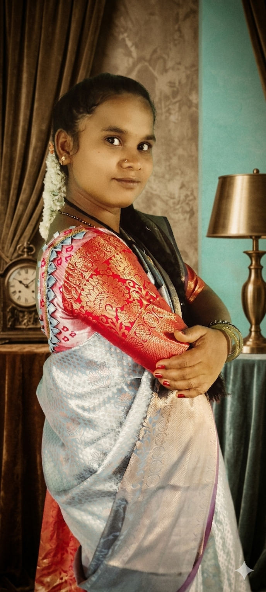
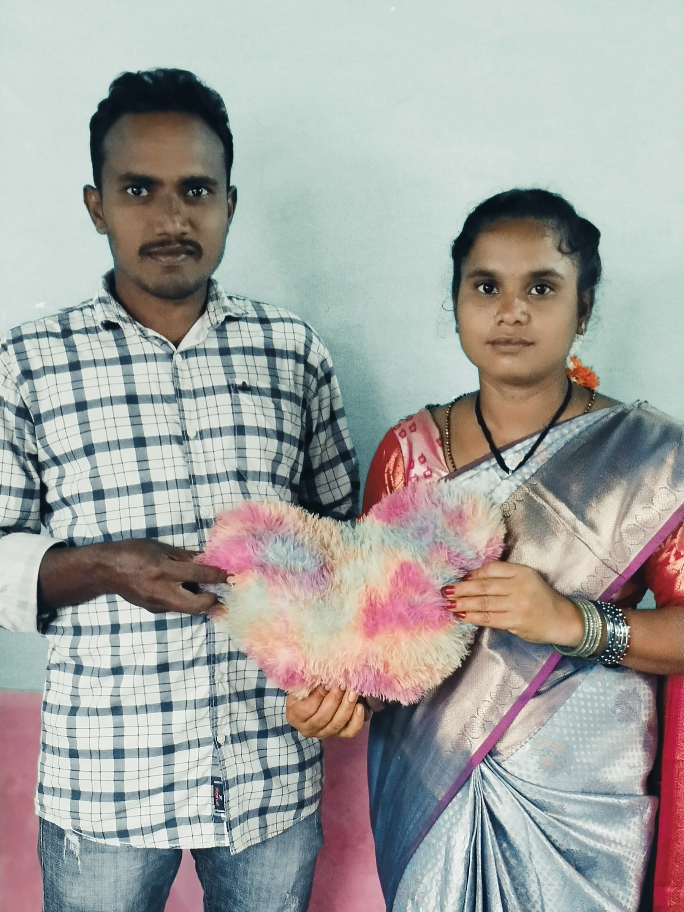
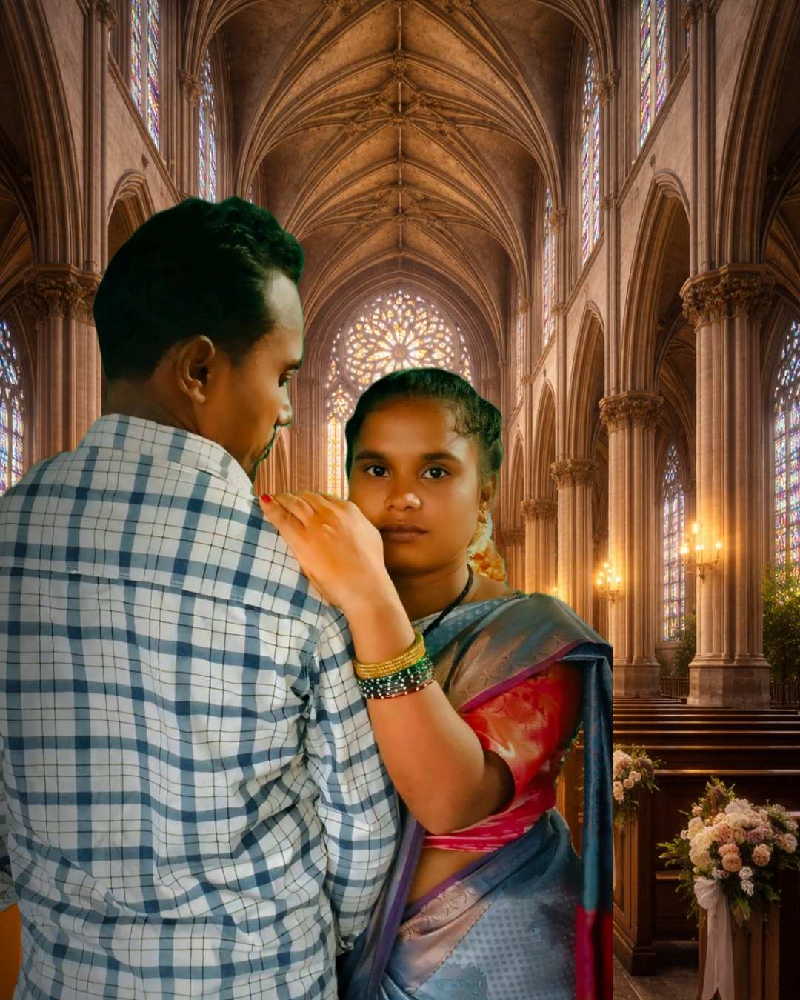
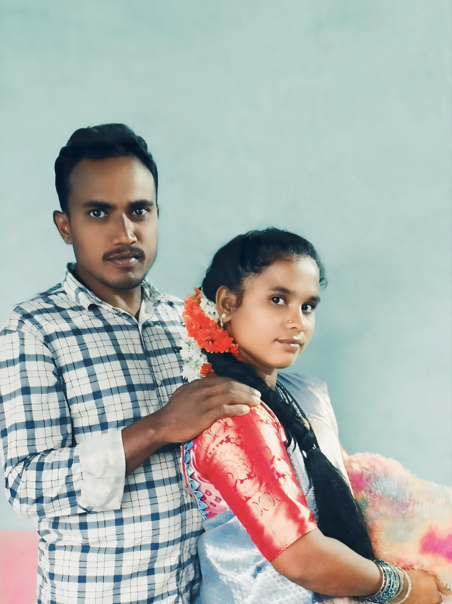

The Beginning
Not every story begins with something grand…
But sometimes, the simplest beginnings create the most beautiful journeys.
From two individuals… to one soul… to a family full of love.


